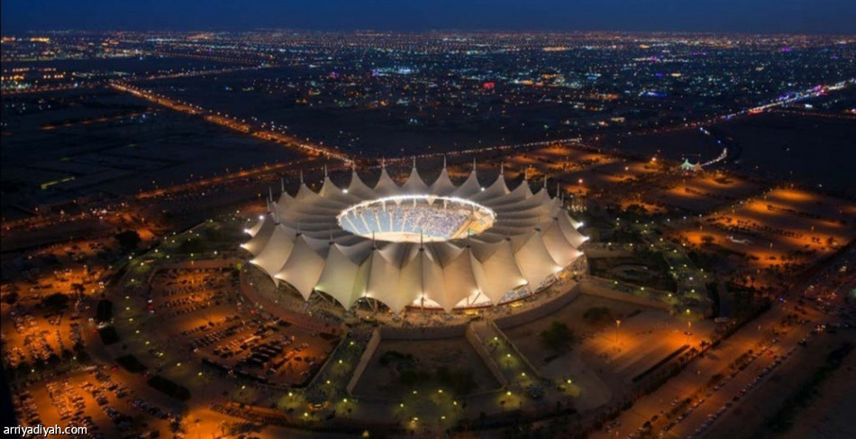

ملعب الملك فهد الدولي
يقع في الرياض ويُعرف باسم "درة الملاعب". يتسع لأكثر من 68,000 مشجع، واستضاف بطولات كبيرة مثل كأس آسيا 1988 و2011.
إليك قائمة ببعض أبرز الملاعب في السعودية:
يقع في الرياض ويُعرف باسم "درة الملاعب". يتسع لأكثر من 68,000 مشجع، واستضاف بطولات كبيرة مثل كأس آسيا 1988 و2011.
يقع في جدة، وهو جزء من مدينة الملك عبد الله الرياضية. يتسع لـ62,000 مشجع، ويتميز بتصميمه الحديث.
يقع في الرياض، ويتسع لحوالي 22,000 مشجع. يُستخدم في مباريات الدوري المحلي وبعض الأحداث الدولية.
يقع في الدمام، ويتسع لحوالي 35,000 مشجع. يُستخدم بشكل رئيسي لمباريات فرق المنطقة الشرقية.
يقع في مكة المكرمة، ويستضيف مباريات نادي الوحدة. يتسع لـ33,000 مشجع.
يقع في جدة، ويتسع لحوالي 27,000 مشجع. استضاف العديد من المباريات المحلية والدولية.
تقع الهلال أرينا في الرياض، ويتسع لـ26,700 مشجع. وهو مجهز بمرافق عالمية المستوى.